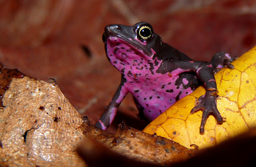

Ателопы, или арлекины - род бесхвостых земноводных из семейства
настоящих жаб, обитающих в Новом Свете.
Общая длина представителей этого рода колеблется от 2 до 8 см. Голова
среднего размера, морда немного вытянута - у самцов больше, чем у самок.
Глаза с горизонтальными зрачками. Барабанные перепонки, паротиды и,
как правило, среднее ухо отсутствуют. Язык длинный, гибкий, эллиптический
и цельнокруглый, сзади не закреплён. Нёбные зубы и нёбные складки
отсутствуют. Грудина хрящевая. Туловище небольшое, кожа гладкая,
бархатистая. Окраска яркая и красочная, дополняется
многочисленными тёмными пятнами.
Цена составляет 15000 рублей
